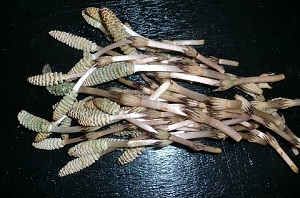
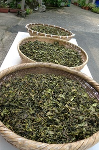
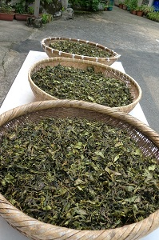

| 自然の恵み素材、山菜 | |
| 天の恵みの素材を３月から６月にかけて、主人、職員、家族総出で自ら山に入り山菜を摘んでおります この季節の山菜、この時期の山菜の素材を生かした料理を皆様にお出しています。 ふきのとう、つくし、たらのめ、こごみ、こしあぶら、ぜんまい、わらび、うど、ふき、たけのこ、わさび、しいたけ |
|
| 1.春一番雪どけの中から蕗のとうが芽を出します。天ぷらにしてもいいし、蕗味噌にしてもおいしいです。またみそしるに葉をいれても風味があります。 2.つくしは、採ってはかまを丁寧にむぎます。採ったあとの処理が手間が要ります。ごまあえにおいしです。 |
|
 |
 |
| 3.たらの芽は、だんだんと山でとれる量が少なくなりました。てんぷらにしてもいいし、うす醤油あじで煮てもおいしいです。 | |
 
